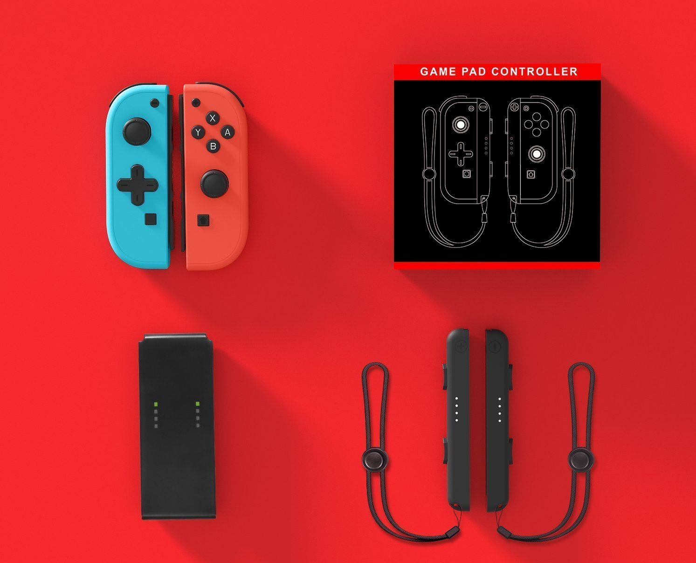
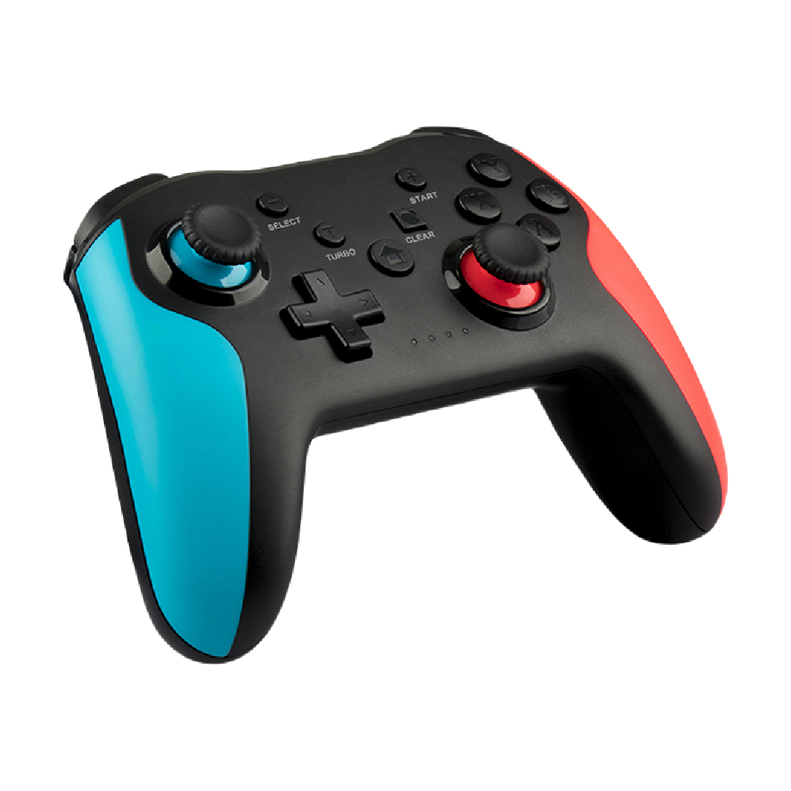
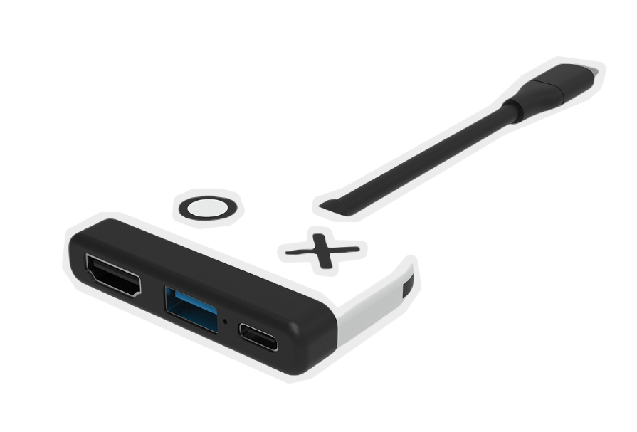

The quality is good, 9/10. + High-quality and pleasant plastic JoyCons to the touch. + Buttons and stick work well, without play and other things. + Quick search and console connection. +-The color is slightly lighter than the originals in the same performance. -The body of JoyCons (from below), a little wider than the originals, it makes it more pleasant and more convenient to hold in your hand, but it is difficult to connect to the original nozzle-the GamePad. -According to the feeling of poor quality plastic on the ropes. It performs its functions, but performed very cheaply. P.S. In a set of JoyCons, a bit-gamepad, a string of 2 pieces (missed this information when buying and was pleasantly surprised to open the box).

Delivery was much faster than anticipated. In 1 week instead of almost 3 weeks. The gamepad was in perfect condition. Not so the box, which was a bit wrinkled, but for that I bought it with the box, so that the blows would take it and not the gamepad. I have tried it (it came pre-loaded, a good detail) with smartphone (Stumbleguys and Sonic2 games) and on PC (Among Us and Never Alone) and it works perfectly. The bluetooth system lines up very well and fast, following the instructions is really easy. Plastic, without being an expert, looks medium quality, but if it is treated well, it will surely last a long time. The truth is that because of what it has cost me and seeing the price on other similar websites, you cannot ask for more. Recommended 100%!

Great product, works perfectly. Colors become a little more popped compared to the original dock. For those who want something portable and cheap is perfect. It is only good to be careful with the vent output of the switch so as not to get too hot.
Product of excellent quality, congratulations to the brand, in Brazil does not find product of this level
Works perfectly. This is for a friend and he has already told me that it works perfectly for him (it is the second I buy)
